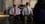
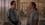

Rated: 8.2 out of 10 with 76,706 votes.
Adrian Monk was once a rising star with the San Francisco Police Department, legendary for using unconventional means to solve the department's most baffling cases. But after the tragic (and still unsolved) murder of his wife Trudy, he developed an extreme case of obsessive-compulsive disorder. Now working as a private consultant, Monk continues to investigate cases in the most unconventional ways.


Season: 8
Show Episodes
Hide Episodes
| # | Title | Watched | Air Date | ||
|---|---|---|---|---|---|
| 16 | Mr. Monk and the End (Part Two) | Friday, December 4th, 200912/04/09 | |||
| 15 | Mr. Monk and the End (Part One) | Friday, November 27th, 200911/27/09 | |||
| 14 | Mr. Monk and the Badge | Friday, November 20th, 200911/20/09 | |||
| 13 | Mr. Monk Is the Best Man | Friday, November 13th, 200911/13/09 | |||
| 12 | Mr. Monk Goes Camping | Friday, November 6th, 200911/06/09 | |||
| 11 | Mr. Monk and the Dog | Friday, October 30th, 200910/30/09 | |||
| 10 | Mr. Monk and Sharona | Friday, October 23rd, 200910/23/09 | |||
| 9 | Happy Birthday, Mr. Monk | Friday, October 16th, 200910/16/09 | |||
| 8 | Mr. Monk Goes to Group Therapy | Friday, October 9th, 200910/09/09 | |||
| 7 | Mr. Monk and the Voodoo Curse | Friday, September 25th, 200909/25/09 | |||
| 6 | Mr. Monk and the Critic | Friday, September 18th, 200909/18/09 | |||
| 5 | Mr. Monk Takes the Stand | Friday, September 11th, 200909/11/09 | |||
| 4 | Mr. Monk is Someone Else | Friday, August 28th, 200908/28/09 | |||
| 3 | Mr. Monk and the UFO | Friday, August 21st, 200908/21/09 | |||
| 2 | Mr. Monk and the Foreign Man | Friday, August 14th, 200908/14/09 | |||
| 1 | Mr. Monk's Favorite Show | Friday, August 7th, 200908/07/09 |
Season: 7
Show Episodes
Hide Episodes
| # | Title | Watched | Air Date | ||
|---|---|---|---|---|---|
| 16 | Mr. Monk Fights City Hall | Friday, February 20th, 200902/20/09 | |||
| 15 | Mr. Monk and the Magician | Friday, February 13th, 200902/13/09 | |||
| 14 | Mr. Monk and the Bully | Friday, February 6th, 200902/06/09 | |||
| 13 | Mr. Monk Makes the Playoffs | Friday, January 30th, 200901/30/09 | |||
| 12 | Mr. Monk and the Lady Next Door | Friday, January 23rd, 200901/23/09 | |||
| 11 | Mr. Monk on Wheels | Friday, January 16th, 200901/16/09 | |||
| 10 | Mr. Monk's Other Brother | Friday, January 9th, 200901/09/09 | |||
| 9 | Mr. Monk and the Miracle | Friday, November 28th, 200811/28/08 | |||
| 8 | Mr. Monk Gets Hypnotized | Friday, September 12th, 200809/12/08 | |||
| 7 | Mr. Monk's 100th Case | Friday, September 5th, 200809/05/08 | |||
| 6 | Mr. Monk Falls In Love | Friday, August 22nd, 200808/22/08 | |||
| 5 | Mr. Monk Is Underwater | Friday, August 15th, 200808/15/08 | |||
| 4 | Mr. Monk Takes A Punch | Friday, August 8th, 200808/08/08 | |||
| 3 | Mr. Monk Gets Lotto Fever | Friday, August 1st, 200808/01/08 | |||
| 2 | Mr. Monk and the Genius | Friday, July 25th, 200807/25/08 | |||
| 1 | Mr. Monk Buys a House | Friday, July 18th, 200807/18/08 |
Season: 6
Show Episodes
Hide Episodes
| # | Title | Watched | Air Date | ||
|---|---|---|---|---|---|
| 16 | Mr. Monk Is On The Run (2) | Friday, February 22nd, 200802/22/08 | |||
| 15 | Mr. Monk Is On The Run (1) | Friday, February 15th, 200802/15/08 | |||
| 14 | Mr. Monk Paints His Masterpiece | Friday, February 1st, 200802/01/08 | |||
| 13 | Mr. Monk and the Three Julies | Friday, January 25th, 200801/25/08 | |||
| 12 | Mr. Monk Goes to the Bank | Friday, January 18th, 200801/18/08 | |||
| 11 | Mr. Monk Joins a Cult | Friday, January 11th, 200801/11/08 | |||
| 10 | Mr. Monk and the Man Who Shot Santa Claus | Friday, December 7th, 200712/07/07 | |||
| 9 | Mr. Monk Is Up All Night | Friday, September 14th, 200709/14/07 | |||
| 8 | Mr. Monk and the Wrong Man | Friday, September 7th, 200709/07/07 | |||
| 7 | Mr. Monk and the Daredevil | Friday, August 24th, 200708/24/07 | |||
| 6 | Mr. Monk and the Buried Treasure | Friday, August 17th, 200708/17/07 | |||
| 5 | Mr. Monk and the Birds and the Bees | Friday, August 10th, 200708/10/07 | |||
| 4 | Mr. Monk and the Bad Girlfriend | Friday, August 3rd, 200708/03/07 | |||
| 3 | Mr. Monk and the Naked Man | Friday, July 27th, 200707/27/07 | |||
| 2 | Mr. Monk and the Rapper | Friday, July 20th, 200707/20/07 | |||
| 1 | Mr. Monk and His Biggest Fan | Friday, July 13th, 200707/13/07 |
Season: 5
Show Episodes
Hide Episodes
| # | Title | Watched | Air Date | ||
|---|---|---|---|---|---|
| 16 | Mr. Monk Goes to the Hospital | Friday, March 2nd, 200703/02/07 | |||
| 15 | Mr. Monk and the Really, Really Dead Guy | Friday, February 23rd, 200702/23/07 | |||
| 14 | Mr. Monk Visits a Farm | Friday, February 9th, 200702/09/07 | |||
| 13 | Mr. Monk is On the Air | Friday, February 2nd, 200702/02/07 | |||
| 12 | Mr. Monk is At Your Service | Friday, January 26th, 200701/26/07 | |||
| 11 | Mr. Monk Makes a Friend | Friday, January 19th, 200701/19/07 | |||
| 10 | Mr. Monk and the Leper | Friday, December 22nd, 200612/22/06 | |||
| 9 | Mr. Monk Meets His Dad | Friday, November 17th, 200611/17/06 | |||
| 8 | Mr. Monk Goes to a Rock Concert | Friday, August 25th, 200608/25/06 | |||
| 7 | Mr. Monk Gets a New Shrink | Friday, August 18th, 200608/18/06 | |||
| 6 | Mr. Monk and the Class Reunion | Friday, August 11th, 200608/11/06 | |||
| 5 | Mr. Monk, Private Eye | Friday, August 4th, 200608/04/06 | |||
| 4 | Mr. Monk Can't See a Thing | Friday, July 28th, 200607/28/06 |  | ||
| 3 | Mr. Monk and the Big Game | Friday, July 21st, 200607/21/06 | |||
| 2 | Mr. Monk and the Garbage Strike | Friday, July 14th, 200607/14/06 | |||
| 1 | Mr. Monk and the Actor | Friday, July 7th, 200607/07/06 |
Season: 4
Show Episodes
Hide Episodes
| # | Title | Watched | Air Date | ||
|---|---|---|---|---|---|
| 16 | Mr. Monk Gets Jury Duty | Friday, March 17th, 200603/17/06 | |||
| 15 | Mr. Monk Goes to the Dentist | Friday, March 10th, 200603/10/06 | |||
| 14 | Mr. Monk and the Astronaut | Friday, March 3rd, 200603/03/06 | |||
| 13 | Mr. Monk and the Big Reward | Friday, February 3rd, 200602/03/06 | |||
| 12 | Mr. Monk and the Captain's Marriage | Friday, January 27th, 200601/27/06 | |||
| 11 | Mr. Monk Bumps His Head | Friday, January 20th, 200601/20/06 | |||
| 10 | Mr. Monk Goes to a Fashion Show | Friday, January 13th, 200601/13/06 | |||
| 9 | Mr. Monk and the Secret Santa | Friday, December 2nd, 200512/02/05 | |||
| 8 | Mr. Monk and Little Monk | Friday, August 26th, 200508/26/05 | |||
| 7 | Mr. Monk Goes to a Wedding | Friday, August 19th, 200508/19/05 | |||
| 6 | Mr. Monk and Mrs. Monk | Friday, August 12th, 200508/12/05 | |||
| 5 | Mr. Monk Gets Drunk | Friday, August 5th, 200508/05/05 | |||
| 4 | Mr. Monk Goes to the Office | Friday, July 29th, 200507/29/05 | |||
| 3 | Mr. Monk Stays in Bed | Friday, July 22nd, 200507/22/05 | |||
| 2 | Mr. Monk Goes Home Again | Friday, July 15th, 200507/15/05 | |||
| 1 | Mr. Monk and the Other Detective | Friday, July 8th, 200507/08/05 |
Season: 3
Show Episodes
Hide Episodes
| # | Title | Watched | Air Date | ||
|---|---|---|---|---|---|
| 16 | Mr. Monk and the Kid | Friday, March 4th, 200503/04/05 | |||
| 15 | Mr. Monk and the Election | Friday, February 25th, 200502/25/05 | |||
| 14 | Mr. Monk Goes to Vegas | Friday, February 18th, 200502/18/05 | |||
| 13 | Mr. Monk Gets Stuck in Traffic | Friday, February 11th, 200502/11/05 | |||
| 12 | Mr. Monk Gets Cabin Fever | Friday, February 4th, 200502/04/05 | |||
| 11 | Mr. Monk vs. the Cobra | Friday, January 28th, 200501/28/05 | |||
| 10 | Mr. Monk and the Red Herring | Friday, January 21st, 200501/21/05 | |||
| 9 | Mr. Monk Takes His Medicine | Friday, August 20th, 200408/20/04 | |||
| 8 | Mr. Monk and the Game Show | Friday, August 13th, 200408/13/04 | |||
| 7 | Mr. Monk and the Employee of the Month | Friday, August 6th, 200408/06/04 | |||
| 6 | Mr. Monk and the Girl Who Cried Wolf | Friday, July 30th, 200407/30/04 | |||
| 5 | Mr. Monk Meets the Godfather | Friday, July 23rd, 200407/23/04 | |||
| 4 | Mr. Monk Gets Fired | Friday, July 16th, 200407/16/04 | |||
| 3 | Mr. Monk and the Blackout | Friday, July 9th, 200407/09/04 | |||
| 2 | Mr. Monk and the Panic Room | Friday, June 25th, 200406/25/04 | |||
| 1 | Mr. Monk Takes Manhattan | Friday, June 18th, 200406/18/04 |
Season: 2
Show Episodes
Hide Episodes
| # | Title | Watched | Air Date | ||
|---|---|---|---|---|---|
| 16 | Mr. Monk Goes to Jail | Friday, March 5th, 200403/05/04 |  | ||
| 15 | Mr. Monk Gets Married | Friday, February 27th, 200402/27/04 | |||
| 14 | Mr. Monk and the Captain's Wife | Friday, February 13th, 200402/13/04 | |||
| 13 | Mr. Monk and the Missing Granny | Friday, February 6th, 200402/06/04 | |||
| 12 | Mr. Monk and the T.V. Star | Friday, January 30th, 200401/30/04 | |||
| 11 | Mr. Monk and the Three Pies | Friday, January 23rd, 200401/23/04 | |||
| 10 | Mr. Monk and the Paperboy | Friday, January 16th, 200401/16/04 | |||
| 9 | Mr. Monk and the 12th Man | Friday, August 22nd, 200308/22/03 | |||
| 8 | Mr. Monk Meets the Playboy | Friday, August 15th, 200308/15/03 | |||
| 7 | Mr. Monk and the Sleeping Suspect | Friday, August 8th, 200308/08/03 | |||
| 6 | Mr. Monk Goes to the Theater | Friday, August 1st, 200308/01/03 | |||
| 5 | Mr. Monk and the Very Very Old Man | Friday, July 25th, 200307/25/03 | |||
| 4 | Mr. Monk Goes to the Circus | Friday, July 18th, 200307/18/03 | |||
| 3 | Mr. Monk Goes to the Ballgame | Friday, July 11th, 200307/11/03 | |||
| 2 | Mr. Monk Goes to Mexico | Friday, June 27th, 200306/27/03 | |||
| 1 | Mr. Monk Goes Back to School | Friday, June 20th, 200306/20/03 |
Season: 1
Show Episodes
Hide Episodes
| # | Title | Watched | Air Date | ||
|---|---|---|---|---|---|
| 13 | Mr. Monk and the Airplane | Friday, October 18th, 200210/18/02 | |||
| 12 | Mr. Monk and the Red-Headed Stranger | Friday, October 11th, 200210/11/02 | |||
| 11 | Mr. Monk and the Earthquake | Friday, October 4th, 200210/04/02 | |||
| 10 | Mr. Monk Takes a Vacation | Friday, September 20th, 200209/20/02 | |||
| 9 | Mr. Monk and the Marathon Man | Friday, September 13th, 200209/13/02 | |||
| 8 | Mr. Monk and the Other Woman | Friday, August 23rd, 200208/23/02 | |||
| 7 | Mr. Monk and the Billionaire Mugger | Friday, August 16th, 200208/16/02 | |||
| 6 | Mr. Monk Goes to the Asylum | Friday, August 9th, 200208/09/02 | |||
| 5 | Mr. Monk Goes to the Carnival | Friday, August 2nd, 200208/02/02 | |||
| 4 | Mr. Monk Meets Dale the Whale | Friday, July 26th, 200207/26/02 | |||
| 3 | Mr. Monk and the Psychic | Friday, July 19th, 200207/19/02 | |||
| 2 | Mr. Monk Meets the Candidate (2) | Friday, July 12th, 200207/12/02 | |||
| 1 | Mr. Monk Meets the Candidate (1) | Friday, July 12th, 200207/12/02 |
You may also like these TV Shows: